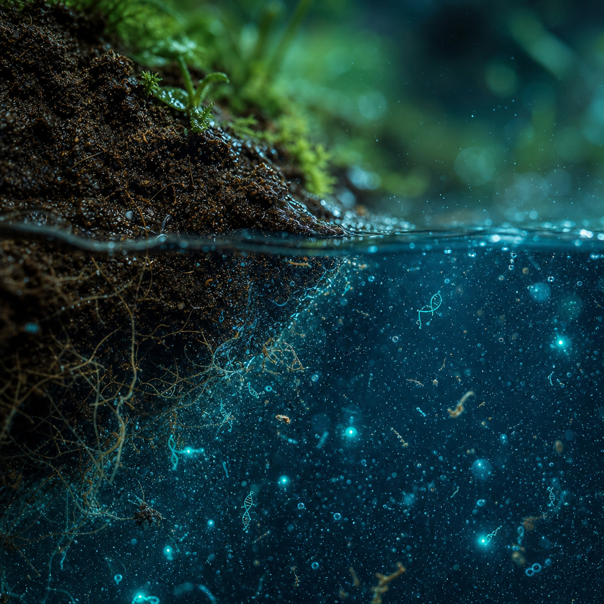
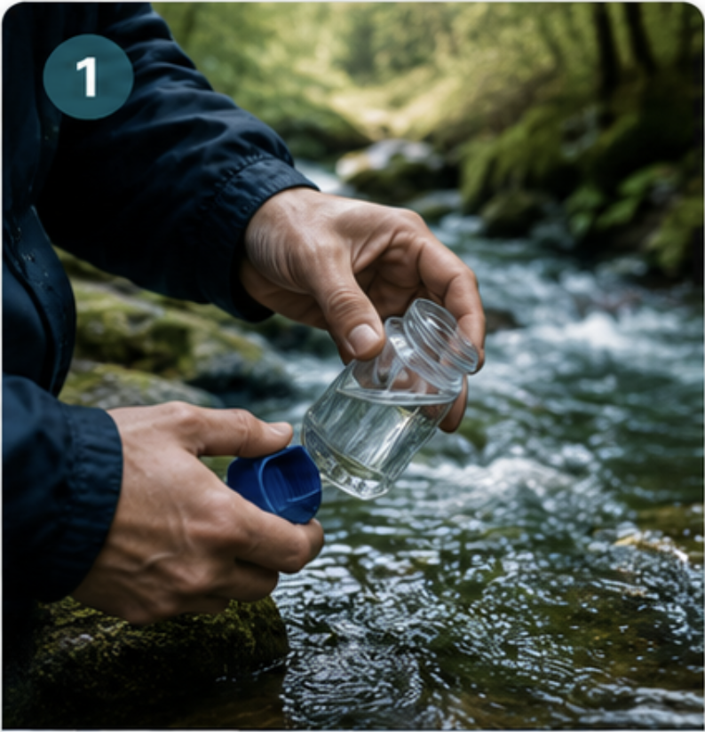
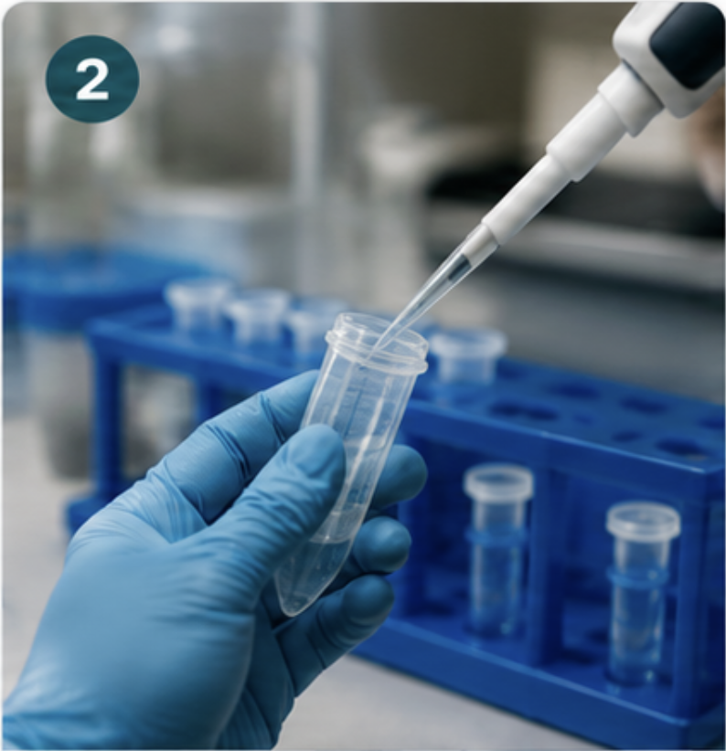
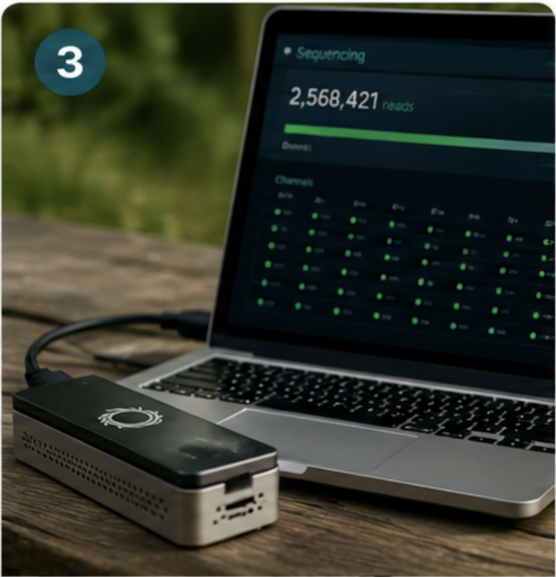
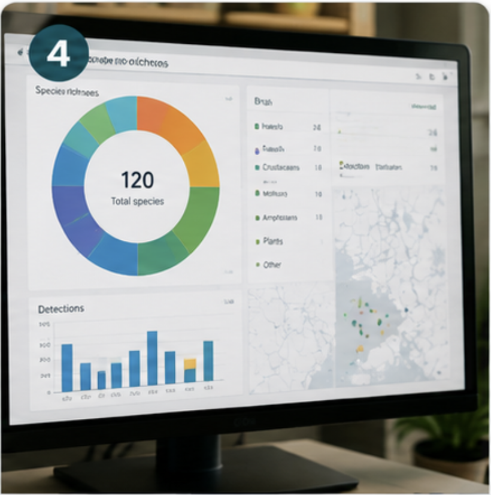
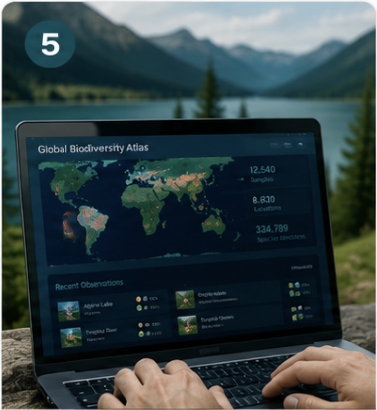
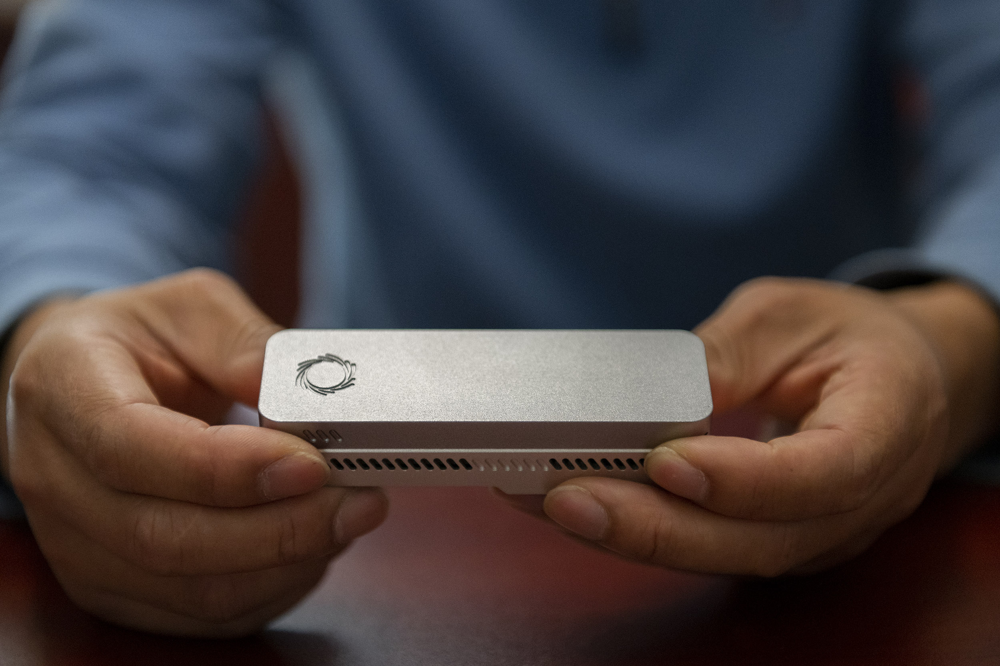

Our Mission
Reading the living library of life
Every living organism carries a genome. Together these genomes form the World Genome, the collective genetic record of life on Earth. We exist to help the next generation read it before it disappears.
The World Genome
An invaluable library we have barely begun to read
As biodiversity declines, we risk losing irreplaceable genetic information before it is ever discovered. Whole branches of the living library are vanishing unread, taking their chemistry, their adaptations, and their stories with them.
World Genome Academy empowers students with the tools, knowledge, and curiosity to read this library through environmental DNA. We make genomic literacy accessible while contributing to real scientific research and active conservation, turning curious learners into credible scientists.
Partner with us

What is environmental DNA
The traces of life
Environmental DNA, or eDNA, is the genetic material that organisms shed into the environment through skin cells, mucus, hair, waste, and other biological traces, leaving behind detectable DNA in water, soil, and air.
By sampling a cup of seawater or a pinch of riverbank mud, we can detect the species that passed through, no nets, no traps, no disturbance to wildlife. eDNA lets us study biodiversity gently and at scale, through nature's molecular traces.
- Non-invasiveRead nature's DNA without disturbing a single organism.
- SensitiveOne sample reveals hundreds of species, even the rarest.
- ScalableOne method, adaptable to any classroom and ecosystem.
What students actually do
From a cup of water to a global record
Five clear steps turn a field trip into real science. Every sample reveals hidden ecosystem life and helps preserve its genetic record for future generations.

Collect
Gather water and soil samples from oceans, freshwater, and terrestrial sites near the school.

Extract
Isolate and purify the DNA from each sample using accessible field protocols.

Sequence
Read the DNA on portable Oxford Nanopore devices, right in the field or classroom.

Analyze
Match sequences to species and measure the biodiversity hidden in each location.

Contribute
Add findings to shared biodiversity atlases that researchers worldwide can use.
Lab-grade science, field-ready
A genomics lab that fits in a backpack
Portable Oxford Nanopore sequencers are no larger than a smartphone, yet they read the same long strands of DNA used in frontier research. That changes who gets to do genomics. The lab no longer sits behind closed doors; it travels to the tide pool, the riverbank, and the schoolyard.
Students plug a sequencer into a laptop, watch sequences appear in real time, and see their own samples become data within a single class. The technology is rigorous, but the experience is hands-on, immediate, and genuinely theirs.
See how it fits the curriculum
Every sample reveals hidden ecosystem life and helps preserve its genetic record for the generations who come next.
The World Genome Academy mission